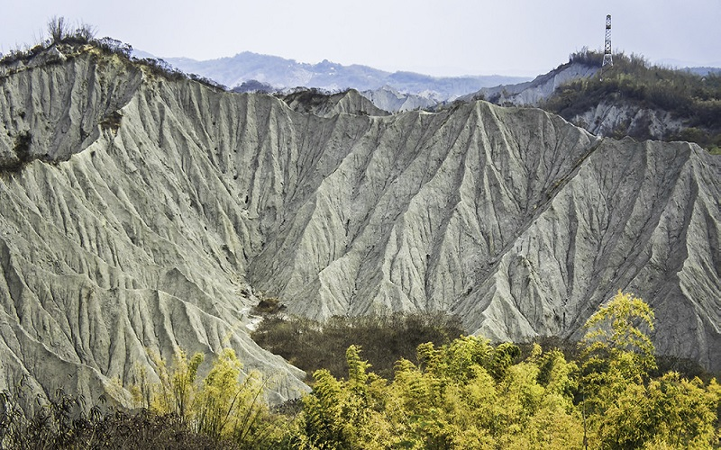
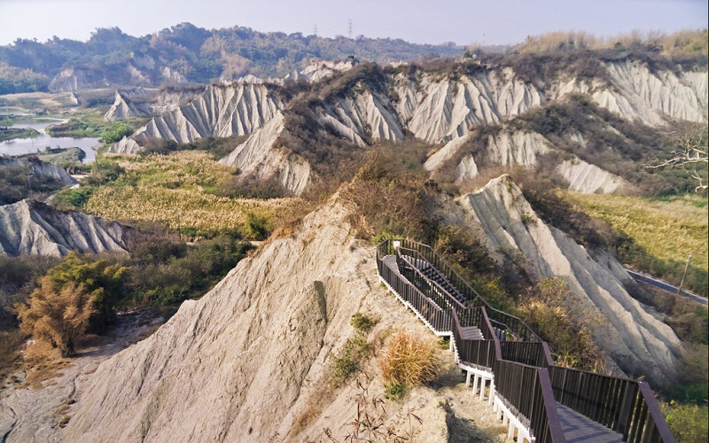
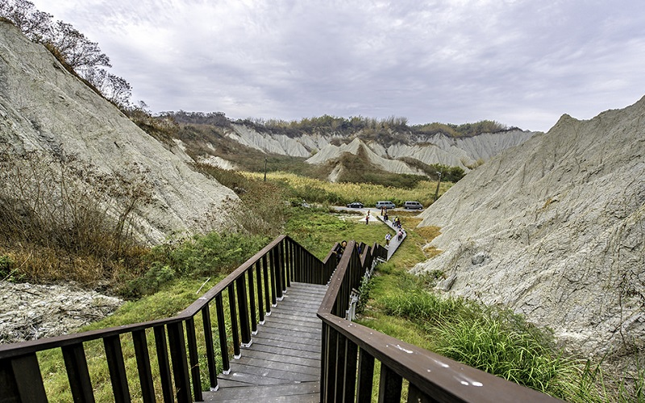

Tianliao Moon World
Kaohsiung City
Moon World Landscape Park
 The Tianliao Moon World is the most developed badland and mud volcano areas among the four badlands in Taiwan
It is famous for the desolate, barren beauty. The special scenery results from the erosion of rain and river, which causes
the rugged surface and the infertile soil that makes against the growth of plants. The thorny bamboos are the only vegetation
that can suvive here. During fall and winter, the bamboos will turn yellow, and the area is filled with yellow and green,
forms a magnificent scenery and attracts those who likes photographing.
Public bus service to the area is available from R70 metro shuttle bus.